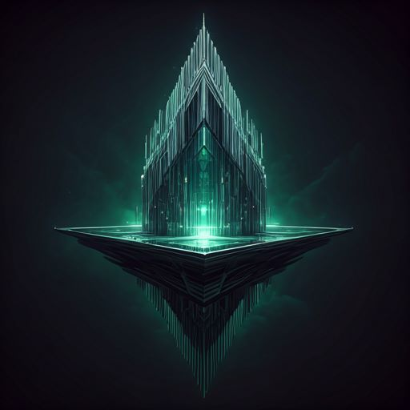

PROJECT / 01
01
Projekt pierwszy
Krótki opis projektu. Tutaj możesz napisać, co stworzyłeś i czego się przy tym nauczyłeś.
Cześć, jestem Tomek
Tworzę rzeczy, rozwijam swoje umiejętności i szukam coraz trudniejszych wyzwań. To miejsce pokazuje moje projekty, pomysły i rzeczy, nad którymi aktualnie pracuję.
Mam na imię Tomek i mam 16 lat. Lubię uczyć się nowych rzeczy, eksperymentować i zamieniać pomysły w gotowe projekty.
Nie chcę stać w miejscu. Każda kolejna praca ma być lepsza od poprzedniej, dlatego cały czas rozwijam swoje umiejętności i szukam nowych sposobów na tworzenie ciekawych rzeczy.
Sześć miejsc na projekty, które najlepiej pokazują mój styl, rozwój i kierunek, w którym chcę iść.
Krótki opis projektu. Tutaj możesz napisać, co stworzyłeś i czego się przy tym nauczyłeś.

Krótki opis projektu. Zamień ten tekst na informacje o swojej pracy.

Krótki opis projektu. Dodaj tutaj najważniejsze informacje i efekt końcowy.

Krótki opis projektu. Napisz tutaj, nad czym pracowałeś.

Krótki opis projektu. Możesz tutaj dodać użyte technologie.

Krótki opis projektu. Ostatnie miejsce na pracę, którą chcesz się pochwalić.
Mam jeszcze dużo do nauczenia i jeszcze więcej do zrobienia. Jeśli chcesz zobaczyć więcej moich prac albo się ze mną skontaktować — napisz.
Napisz do mnie